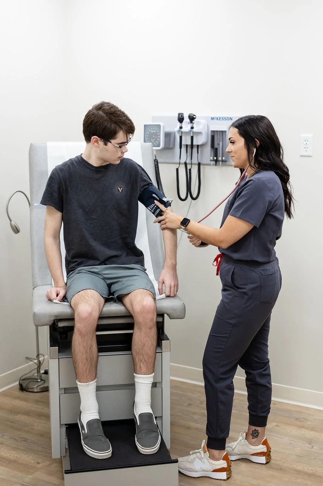
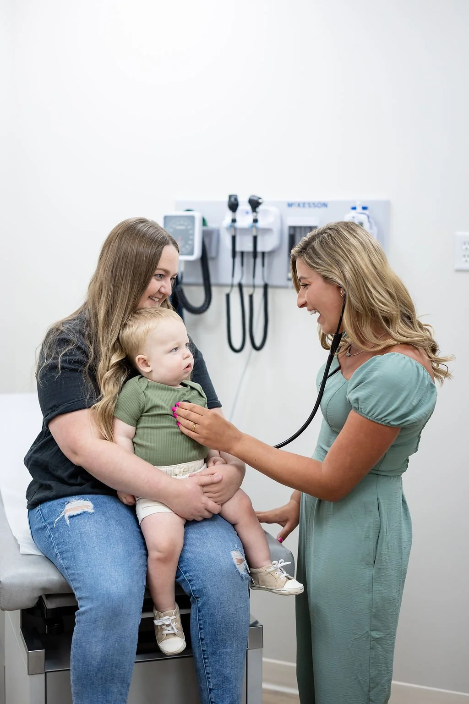
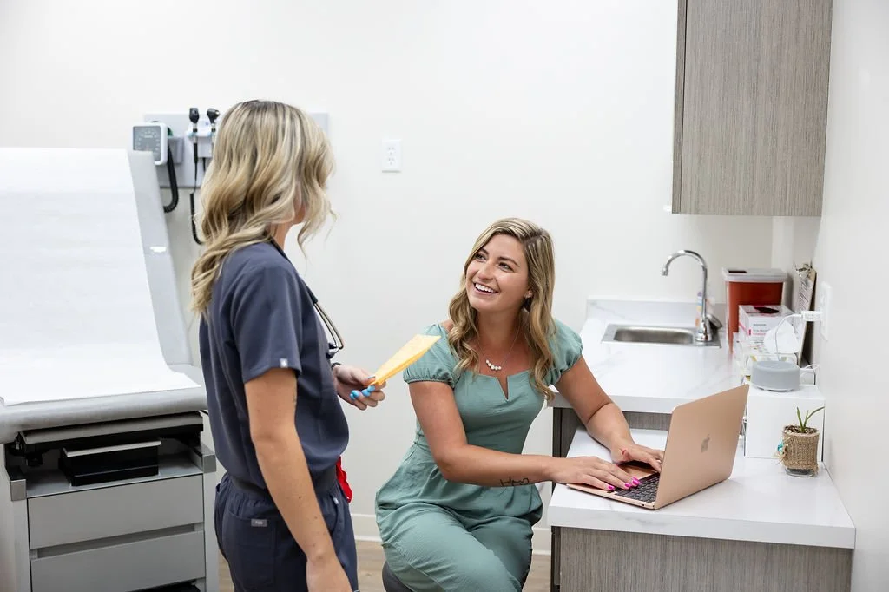
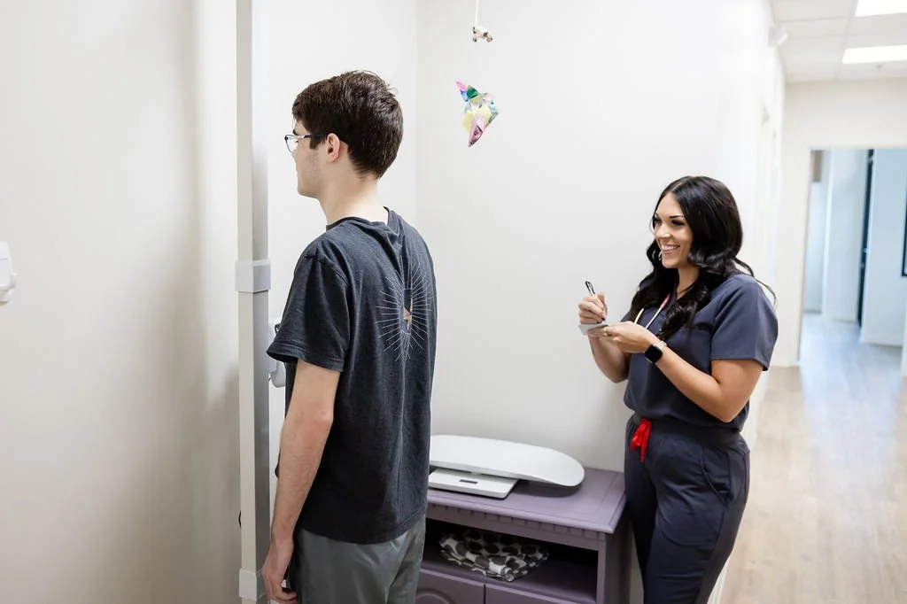
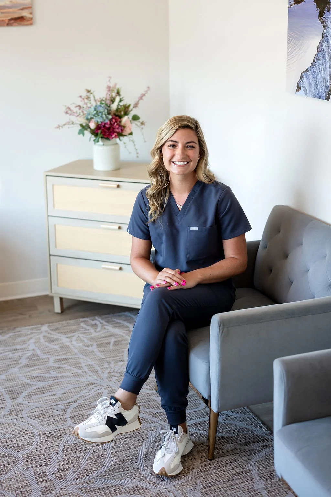
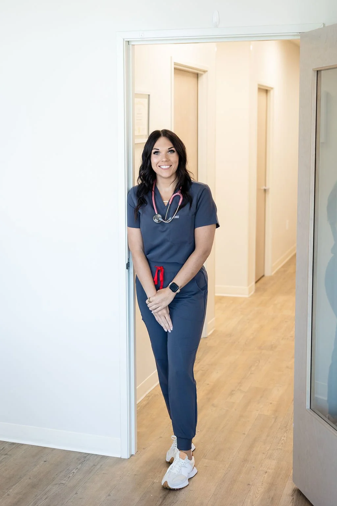
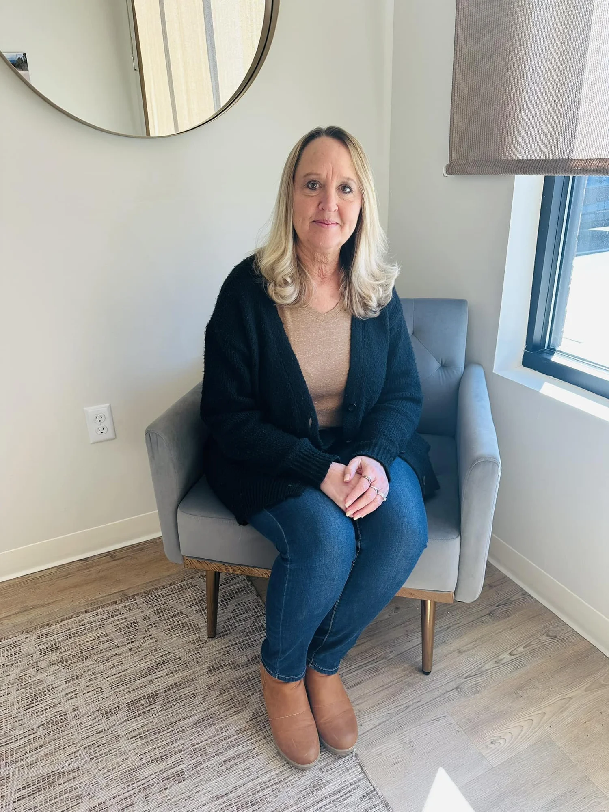

Primary Care
Wellness exams, same-day sick visits, chronic disease management, school and sports physicals, immunizations, and in-office labs for newborns through seniors.
Primary care servicesBurds Family Practice is independent and locally owned. We are not part of a hospital system or corporate network. When you call, you reach the same local clinic team who knows you and your family.

Primary care, Direct Primary Care, workplace health, mental health support, and medical aesthetics, all right here in Peosta.

Wellness exams, same-day sick visits, chronic disease management, school and sports physicals, immunizations, and in-office labs for newborns through seniors.
Primary care services
A simple monthly membership ($99/mo adult, $79/mo spouse, $49/mo child) with unlimited visits, $0 copays, and same- or next-day access.
See DPC pricing
FMCSA-certified DOT physicals, pre-employment exams, 12-panel drug screening, audiograms, and work injury care for local employers.
Employer servicesPrimary care screening plus psychiatric evaluations and medication management with Jenna Hefel, DNP, PMHNP-BC, certified in Perinatal Mental Health.
Mental health careInfrared heat warms your body directly instead of overheating the air, offering restorative wellness sessions at gentler temperatures.
Wellness servicesOur sister medspa offering SkinBetter Science skincare, injectables, RF microneedling, laser hair removal, and Cherry monthly payment plans.
Visit burdsskinrx.comAdults $99/mo · Spouse/Partner $79/mo · Children $49/mo. Unlimited primary care visits and $0 copays.
Pick a preset or adjust the numbers. Your estimate updates instantly.
When a commercial driver needs a DOT card renewed or a new hire needs a physical and drug screen, sending workers across Dubuque costs hours of productivity. Our Peosta clinic sits minutes from local industrial parks with same-week scheduling and one direct contact.
Owner Jenny Burds, DNP, ARNP is listed on the FMCSA National Registry as a certified medical examiner, keeping your CDL fleet compliant without hassle.
Three doctorate-prepared Nurse Practitioners supported by clinic staff who answer the phone personally.

Owner · Family Nurse Practitioner
30 years in healthcare, Clarke University Doctorate, and FMCSA Certified Medical Examiner for CDL/DOT physicals.

Family Nurse Practitioner
Clarke University DNP caring for infants, teens, adults, and families with practical, relationship-first primary care.

Psychiatric Nurse Practitioner
Psychiatric evaluations and medication management for ages 12+, certified in Perinatal Mental Health since 2015.


Real feedback from patients who visit our clinic in Peosta.
“Jenny is very kind and compassionate. She deeply cares for her patients and takes time to address your concerns without feeling rushed. The environment is warm and inviting and all staff make you feel welcome. 5 star care.”
“I highly recommend this family practice! My nurse practitioner is knowledgeable, compassionate, and truly takes the time to listen. I never feel rushed during my appointments, and she always explains things clearly so I understand my options and feel confident in my care. It’s obvious that she genuinely cares about her patients and wants what’s best for them. The office is welcoming, professional, and I always leave feeling heard and well cared for.”
“My 1st Burds Family Practice experience was great! Jennifer took great care of me! She was attentive & also gave me tips & advice to help with my supplements. I am a new patient & I’m happy they were recommended to me. The office was clean & they offer many other services. I’d recommend them if you’re looking to establish care & want doctors who take the time to create a custom & knowledgeable experience. Thank you!”
We're just off U.S. Highway 20 in Peosta, an easy drive from Dubuque, Asbury, Epworth, Farley and Dyersville, with easy parking right outside. Skip the drive into a big hospital system and get seen close to home.
| Mon–Wed | 8 am – 5 pm |
|---|---|
| Thursday | 8 am – 6 pm |
| Friday | 8 am – 12 pm |
| Sat–Sun | Closed |
Yes. We're accepting new patients of every age, from newborns to seniors. Call (563) 588-6659 to schedule, or read our new patient guide.
Usually, yes. We hold same-day appointments for illnesses, infections and minor injuries. Call us when we open at 8 AM and we'll find you a time. For a medical emergency, call 911.
We're at 8411 Peosta Commercial Ct, Suite 8, Peosta, IA 52068, just off U.S. Highway 20 near Dubuque. Hours are Monday–Wednesday 8 AM–5 PM, Thursday 8 AM–6 PM and Friday 8 AM–12 PM.
Yes. We accept most major insurance plans. Call with your plan name and we'll confirm. Without insurance or with a high deductible, our Direct Primary Care membership may cost you less.
$99/month for an adult, $79/month for a spouse or partner, and $49/month per child ($276/month for a family of four). Membership includes unlimited visits, $0 copays, same- or next-day appointments and direct phone and text access to your provider.
Yes. Owner Jenny Burds, DNP, ARNP is a certified medical examiner on the FMCSA National Registry. We also offer pre-employment physicals, 12-panel drug screens and work injury care. See occupational health.
Three doctorate-prepared nurse practitioners: Jenny Burds, DNP, ARNP (owner, family medicine), Channah Chase, DNP, FNP-BC (family medicine) and Jenna Hefel, DNP, PMHNP-BC (psychiatric care for ages 12+). Meet the team.
Yes. We screen for anxiety and depression in primary care, and Jenna Hefel, DNP, PMHNP-BC provides psychiatric evaluations and medication management for patients 12 and older, including perinatal mental health.
The Burds family was among Peosta's founding families. Jenny Burds, DNP, opened the clinic in 2023 to give her hometown unhurried, relationship-first primary care close to home.
Local builders shaped our space, local artists' work hangs on our clinic walls, and we stay active in the community. We are proud to serve as a Platinum Sponsor of the 'Be A Light' 5K Mental Health Awareness Fun Run and champion fellow small businesses across Peosta and Dubuque.

We welcome families, individuals, and employers from Peosta, Asbury, Cascade, Dubuque, Farley, Dyersville, and across western Dubuque County.